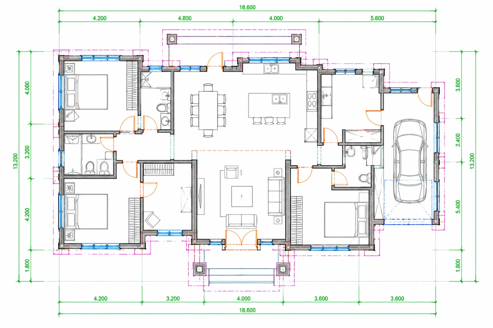

01Drawing-to-CAD Conversion
Convert paper drawings, PDFs and scanned plans into precise, editable 2D CAD files, preserving the required geometry, dimensions, text, symbols and layer structure.
We work from
- Paper technical drawings
- PDF and scanned plans
- Raster images of existing drawings
What you get
- Editable 2D CAD drawings
- Dimensions, texts and symbols as specified
- Structured layers and agreed drawing standards
- AutoCAD DWG
- DXF
- MicroStation DGN
- Allplan, where agreed